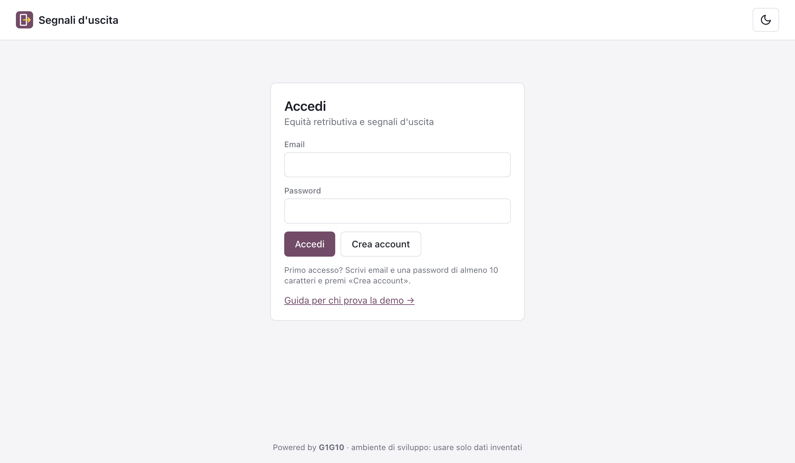

Equità retributiva tra donne e uomini secondo il D.Lgs. 96/2026 e rischio di uscita delle persone: accesso, primi passi, schermate e lettura dei risultati.
Segnali d'uscita è uno strumento online per le aziende e per chi le assiste in ambito HR. Fa due cose:
Ogni azienda ha i propri dati, separati da quelli delle altre. Il rischio di una singola persona si vede solo con un ruolo dedicato e scrivendo il motivo, e ogni accesso resta registrato.
| Voce | Valore |
|---|---|
| Indirizzo dell'app | https://segnali-uscita-app.netlify.app |
| Guida rapida (senza login) | https://segnali-uscita-app.netlify.app/guida |
| Utente | la propria email: ognuno crea il proprio account con Crea account |
| Password | scelta da chi si registra, almeno 10 caratteri |
| Azienda | creata al primo accesso: chi la crea ne è amministratore e la vede solo lui/lei |
| Dati | solo inventati; file di esempio scaricabile dall'app |
| Browser consigliati | Chrome, Safari, Edge o Firefox aggiornati, da computer |
| Dove girano i dati | database e elaborazione a Francoforte (Unione Europea) |

La pagina di accesso: Accedi per chi ha già un account, Crea account al primo utilizzo.
Una persona può avere più ruoli. Chi crea l'azienda è amministratore e può attivarsi gli altri ruoli da Impostazioni.
| Ruolo | Cosa può fare |
|---|---|
| Amministratore | Gestisce l'azienda e i ruoli; vede retribuzioni e documenti; legge i registri di controllo. |
| HR | Carica i dati, vede le retribuzioni individuali, produce report sul divario, documenti e piano d'azione. |
| HR rischio | Come HR, in più: Segnali, Valutazione, Registro casi. Il punteggio di una persona si apre solo scrivendo il motivo. |
| Revisore (DPO) | Legge i registri: chi ha aperto il rischio di chi e perché, e le modifiche ai dati. Non vede gli stipendi. |
| Lettore | Vede solo dati aggregati (Quadro, Funzioni & rischio, report salvati). Mai nomi né stipendi. |
Il modello si scarica da Dati & report Direttiva → modello vuoto. Ha quattro fogli: Dati (obbligatorio), Fattori rischio e Mercato (facoltativi), Istruzioni. Tutti gli importi e le ore riguardano lo stesso periodo.
| Colonna | Obbligatoria | Cosa inserire |
|---|---|---|
| Matricola | sì | codice univoco del dipendente |
| Nominativo | no | facoltativo: non serve al calcolo del divario |
| Genere | sì | F, M oppure ND (non dichiarato: conta nell'organico, esclusa dal divario) |
| Categoria pari valore | sì | stesso lavoro o lavoro di pari valore: di norma il livello del CCNL, es. «C3 impiegati» |
| Funzione | sì | es. PRODUZIONE, AMMINISTRAZIONE |
| Mansione, Sede, Area, Livello CCNL | no | servono ai filtri, alle discese per area e ai documenti |
| FTE | sì | 1 = tempo pieno, 0,5 = metà tempo |
| Ore retribuite | sì | ore pagate nel periodo, straordinari inclusi |
| Retribuzione base lorda € | sì | solo elementi fissi e continuativi (minimo, contingenza, scatti, superminimi, indennità fisse): è il «livello retributivo» della legge |
| Componenti variabili € | no | premi, bonus, una tantum, fringe benefit, trattamenti individuali non strutturali (0 se nessuno) |
| Costo aziendale € | no | retribuzione + oneri: serve alla scheda di formazione finanziata |
| Anzianità anni | no | anni di servizio |
| Formazione titolo / ore / avvio | no | corso di formazione finanziata svolto nel periodo (data gg/mm/aaaa) |
Una riga per matricola; i valori si scelgono dal menu a tendina: Soddisfazione (1–5), Carico di lavoro (1–5), Crescita (No / Ferma / Bloccata), Straordinari (Normali / Elevati / Molto elevati), Riconoscimento (Adeguato / Scarso / Assente), Comportamento (Nessuno / Disimpegno / Ritiro), Mobilità interna (Non richiesta / Richiesta / Bloccata), Mercato esterno (Debole / Normale / Molto attivo), Prestazione (Standard / Alta / Eccellente), Competenze critiche (Sostituibile / Importante / Critica).
Per ogni funzione la RAL media di mercato. In alternativa si imposta dopo, nella scheda Mercato del periodo, scegliendo tra le medie ufficiali.
Dentro ogni periodo, le schede in alto. Alcune compaiono solo con il ruolo giusto.
| Scheda | Chi la vede | A cosa serve e cosa fare |
|---|---|---|
| Quadro | tutti | Organico, persone a rischio alto, priorità critiche, costo a rischio, divario retributivo e a parità di categoria, distribuzione del rischio e rischio per sede. Con HR rischio: l'elenco «Da guardare per prime». |
| Piano d'azione | tutti (modifica: HR) | Le azioni da fare con priorità, scadenza e responsabile, ordinate nel tempo. Per ogni azione si salvano stato, responsabile, scadenza e note. Scaricabile in Word/PDF. Vedi capitolo 8. |
| Segnali | HR rischio | Lista delle persone con priorità (mai il punteggio). Filtri per sede, priorità e stato; ricerca; selezione multipla per Apri casi, Monitora, Rinvia, Esporta CSV, Schede formazione. Su ogni riga Valuta. |
| Valutazione | HR rischio | Scegli una persona e scrivi il motivo: si apre il punteggio. Modifica i fattori e il punteggio si aggiorna subito; sotto, «Economia della ritenzione» (costo di sostituzione, costo a rischio, rapporto con il costo di un intervento). Salva valutazione o Salva e apri caso. Senza persona: simulazione libera. |
| Funzioni & rischio | tutti (persone: HR rischio) | Rischio medio e retribuzione rispetto al mercato per area → funzione → persona. I gruppi sotto 5 persone mostrano solo il numero di persone. |
| Equità | HR | Divario donne/uomini per area → funzione → singola persona (€/h, scostamento dalla media del gruppo e dal mercato). In rosso i gruppi oltre il 5%. |
| Mercato | HR | Assegna a ogni funzione un riferimento di mercato: una media ufficiale (professione × dimensione azienda) o una RAL scritta a mano, con rivalutazione %. |
| Dati & report Direttiva | HR (lettore: report salvati) | Caricamento Excel ed esito dei controlli; report con i 7 indicatori di legge; Salva una copia del report e Rendi definitivo (poi non è più modificabile). |
| Documenti | HR | Scheda formazione finanziata (singola o fascicolo per area), Relazione sul divario, Dossier parità di genere (UNI/PdR 125), Piano d'azione. Anteprima, Stampa / PDF, Scarica Word. |
| Registro | HR rischio | I casi aperti: stato (Aperto, In corso, Chiuso), note, esportazione CSV. |
| Normativa | Il D.Lgs. 96/2026 spiegato in breve, articolo per articolo, con i parametri da rispettare. Si aggiorna solo se cambia la norma: un controllo settimanale confronta i testi ufficiali e, in caso di modifiche, mostra l'avviso «Norma in verifica». |
| Medie di mercato | Medie ufficiali per area geografica, sesso, età, professione, qualifica, dimensione azienda, settore, anzianità, titolo di studio, tipo di contratto e minimi CCNL (Metalmeccanici, Terziario). Fonti: Eurostat e ISTAT 2022, INPS 2024, testi dei CCNL. |
| Impostazioni | I tuoi ruoli (per l'amministratore) e i dati dell'azienda usati nei documenti: ragione sociale, sede, firmatario, fondo, CCNL, ore annue e aliquote. |
| Registri | Per amministratore e revisore: accessi al rischio individuale con motivazione e registro delle attività. Non si possono modificare né cancellare. |
| Voce | Significato |
|---|---|
| Punteggio 0–100 | Somma dei fattori con pesi fissi. Alto da 70, Medio da 40, Basso sotto 40. |
| Driver | I fattori che spingono il punteggio in su (rosso) o in giù (verde), in ordine di peso. |
| Retribuzione vs mercato | Retribuzione di base oraria confrontata con la RAL di mercato della funzione ÷ 1.730 ore: sotto il mercato aumenta il rischio. |
| Priorità | Livello di rischio + prestazione + competenze critiche: Critica, Alta, Media, Bassa. |
| Costo a rischio | RAL annua stimata × 1,75 (costo di sostituzione) × punteggio ÷ 100. |
Il piano si costruisce da solo dai dati del periodo e dagli obblighi di legge, e si aggiorna quando cambiano i dati. Quello che scrivono le persone (stato, responsabile, scadenza, note) resta salvato.
| Priorità | Quando | Esempi |
|---|---|---|
| Critica | obbligo di legge a rischio o danno imminente | divari ≥ 5% da motivare o correggere; colloqui con le persone a priorità critica; DPIA e informativa privacy |
| Alta | da avviare entro 3 mesi | fascia retributiva negli annunci; informativa annuale sul diritto di informazione; criteri dei premi; comunicazione obbligatoria |
| Media | entro 6–12 mesi | criteri di progressione; clausole di riservatezza; rapporto biennale; completare le valutazioni |
| Bassa | miglioramento | categorie troppo piccole da valutare; certificazione della parità di genere |
| Parametro | Valore (D.Lgs. 96/2026) |
|---|---|
| Soglia che fa scattare la valutazione congiunta | divario ≥ 5% in una categoria (art. 10) |
| Tempo per correggere un divario non motivato | 6 mesi dalla comunicazione |
| Obbligo di comunicare il divario | da 100 dipendenti (art. 9) |
| 250 dipendenti e oltre | entro il 7/6/2027, poi ogni anno |
| 150–249 dipendenti | entro il 7/6/2027, poi ogni 3 anni |
| 100–149 dipendenti | entro il 7/6/2031, poi ogni 3 anni |
| Risposta alla richiesta di informazioni del lavoratore | per iscritto entro 2 mesi, una volta l'anno (art. 7) |
| Annunci di lavoro | retribuzione o fascia obbligatoria; vietato chiedere lo stipendio passato (art. 5) |
| Sanzioni per discriminazione | ammenda da 250 a 1.500 €; revoca di benefici ed esclusione fino a 2 anni da agevolazioni e appalti |
Sintesi informativa, non consulenza legale: fanno fede i testi ufficiali, raggiungibili dalla pagina Normativa dell'app.
| Problema | Soluzione |
|---|---|
| Il link dell'email di conferma non funziona | Aprilo nello stesso browser in cui ti sei registrato, oppure torna al sito e fai Accedi. |
| «Troppe registrazioni in poco tempo» | Riprova tra qualche minuto. |
| Non vedo Segnali, Valutazione o Registro | Attiva il ruolo HR rischio da Impostazioni. |
| Il file viene scartato | Leggi l'elenco degli errori sotto il pulsante di caricamento; usa il modello scaricato dall'app senza cambiare i nomi delle colonne. |
| Il divario è «n.d.» | Nella categoria ci sono meno di 3 donne o meno di 3 uomini. |
| Il punteggio di una persona non si apre | Scrivi un motivo di almeno 10 caratteri; la visualizzazione resta aperta 15 minuti. |
| Il Quadro non mostra il rischio | Mancano le valutazioni: carica il foglio «Fattori rischio» o valuta le persone da Valutazione. |
| Password dimenticata | Per ora crea un nuovo account con un'altra email. |
| Categoria di lavoratori | Chi svolge lo stesso lavoro o un lavoro di pari valore (di norma lo stesso livello CCNL). |
| Livello retributivo | Retribuzione lorda annua e oraria dei soli elementi fissi e continuativi. |
| Componenti variabili | Premi, bonus, una tantum, fringe benefit e trattamenti individuali non strutturali. |
| Valutazione congiunta | Analisi dei divari fatta insieme ai rappresentanti dei lavoratori quando un divario ≥ 5% non è motivato né corretto. |
| FTE | Quota di tempo pieno: 1 = tempo pieno, 0,5 = metà tempo. |
| RAL | Retribuzione annua lorda. |
| DPIA | Valutazione d'impatto sulla protezione dei dati, da fare con il DPO prima di usare dati reali. |
| DPO | Responsabile della protezione dei dati dell'azienda. |